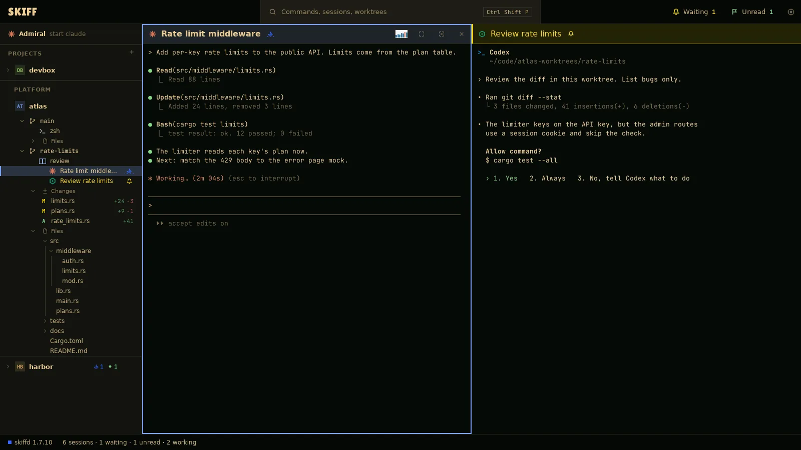
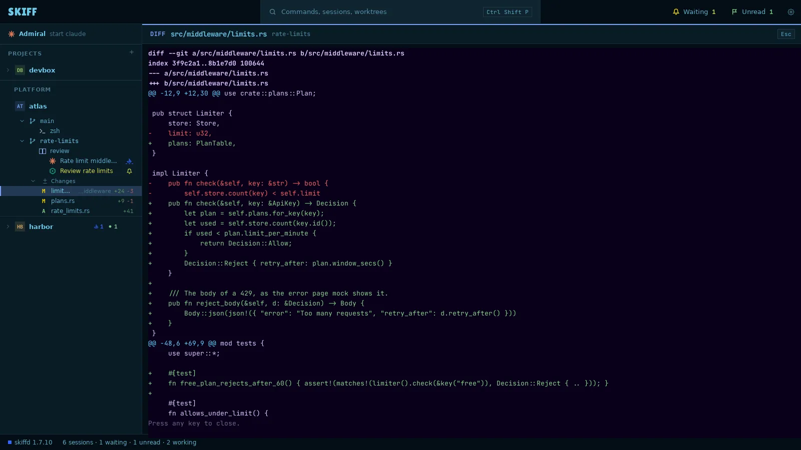
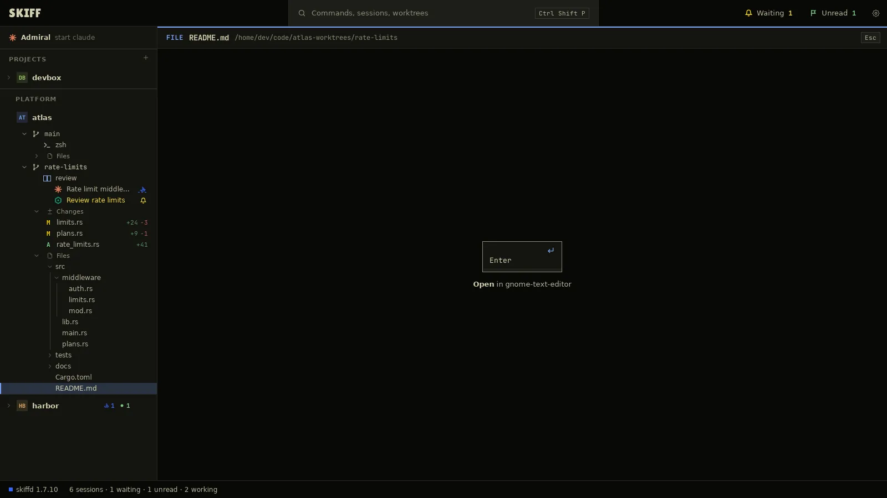

Skiff
SkiffSide panel, diffs and files
The side panel is one tree: Admiral, then each project with its worktrees, groups and sessions. Under each worktree, two sections can show: Changes and Files. A change opens its diff over the panes. A file opens in the app you chose.
Chapter 4 of 9 · Skiff user guide
Side panel
- Click a project row or a fleet head to fold or open it. A folded row shows how many sessions under it wait, work or have unread output.
- Click a session row to show its pane. Click a group row to show the group.
- Move through the rows with Ctrl+Shift+Up and Ctrl+Shift+Down. Each row opens as you land on it. Ctrl+Shift+Left jumps to the project row. Ctrl+Shift+Right goes back to the session on screen. Ctrl+Shift+1 to 9 go to the project with that number, counted down the panel. On macOS these are ⌘+Option+1 to 9.
- To show or hide Changes for a project, open the project menu, click Sidebar, then Changes, or press Ctrl+Shift+G. Files works the same, with Ctrl+Shift+H. A plain folder shows Files by default. A Git project shows Changes.
- Press F6 to move the keys between the side panel and the terminal.

Diffs
- Click the Changes row under a worktree to open the list. The count at its right is the number of changed files.
- Click a file. Its diff opens in the peek, over the panes. The peek is not a session. The agents keep running under it.
- Press Enter to give the keys to the diff, to scroll it. Press Esc, or any key after the diff ends, to close the peek. The row stays current. Press Enter on it to see the diff again.
- To see every change of the worktree in one diff, click the Changes row and press Enter, or right-click the worktree row and click Review all changes.
- Press Shift+Enter on a change, or double-click it, to open the file itself in the app set for it.

The diff comes from the command in Settings › Open with › Diffs. The default is git. The Open with page lists other diff tools.
File browse
- Click the Files row under a worktree to open the tree of its folder.
- Click a folder, or press Space on it, to open or close it.
- Click a file. The peek shows a card with the app that opens it: Open in gnome-text-editor, for example. Press Enter or click the card to open the file in that app. A double-click on the row opens it at once.
- A terminal tool, such as a pager or an editor set to Peek in Settings › Open with, runs inside the peek instead. The peek closes when the tool quits. Ctrl+Shift+W closes it too.
- Right-click the Files row for Refresh and Show in file manager. On a file row, Ctrl+Shift+Z shows the file in the file manager and Ctrl+Shift+Y copies its path.
